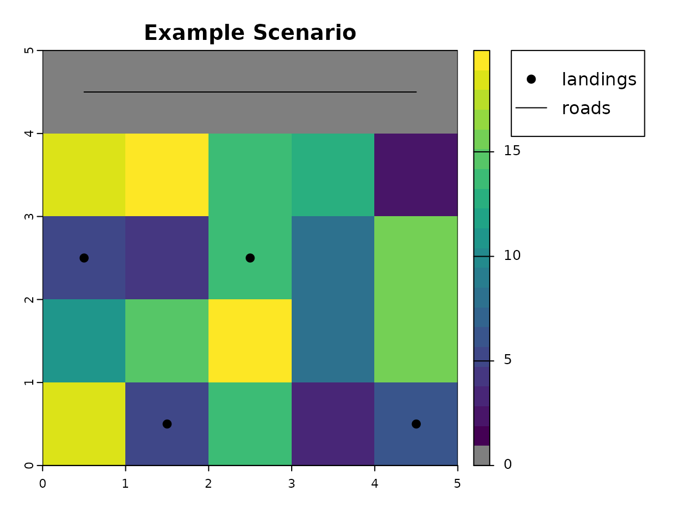
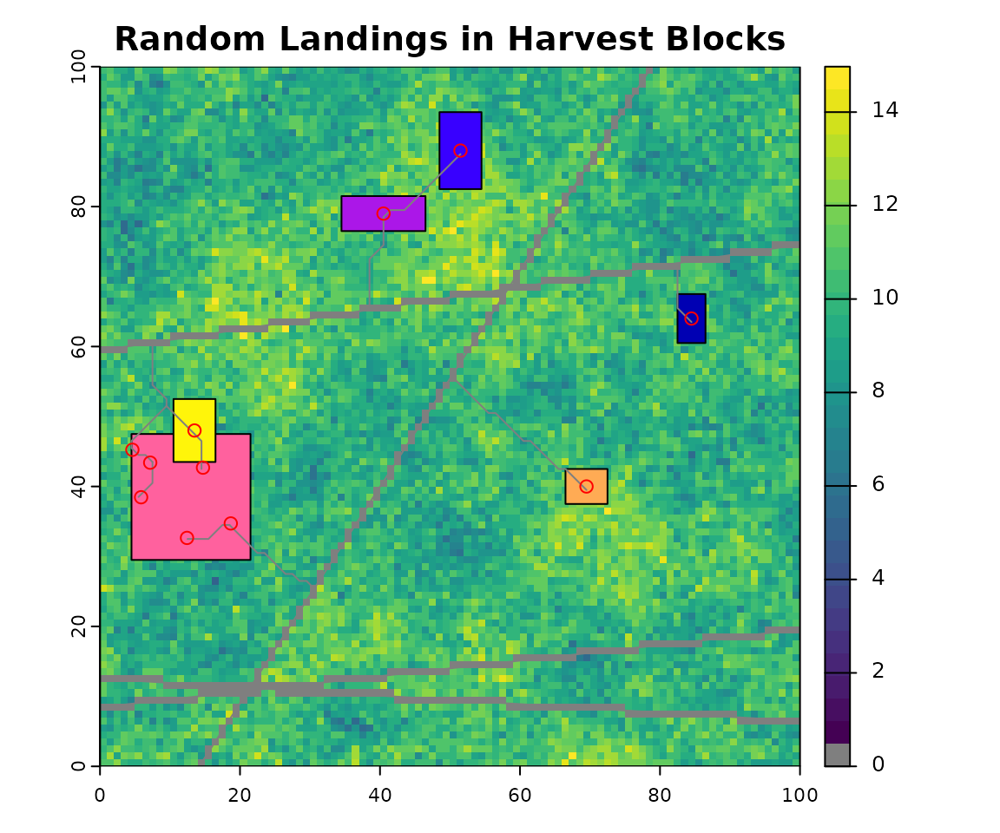

Introduction
This vignette provides a tutorial on the use of the
roads package for the spatial simulation of future roads
development under a given resource development scenario. This tutorial,
which borrows heavily from a demonstration written by Kyle Lochhead and
Tyler Muhly in 2018, will focus primarily on the
projectRoads function of the roads package, as
it is responsible for performing the simulation. Example data sets used
below are included in the package as CLUSexample and
demoScen.
In the context of this package, resource development scenarios are represented by three components:
- Weights Raster and Weight Function: the weights raster is a spatial, gridded weight layer covering the entire landscape. The weight function takes values from adjacent weights raster cells as inputs and returns the cost of developing a new road between them.
- Existing Road Network: a spatial, representation of the existing road network within the landscape.
- Landings: a set of locations where new resource development is to take place.
Given an input resource development scenario,
projectRoads will simulate new roads between the existing
road network and the landings using one of four algorithms:
- Snapping
- Least-cost path (LCP)
- Iterative least-cost path (ILCP)
- Minimum spanning tree (MST)
The output of projectRoads is a list of simulation
results referred to as a “sim list”. The list contains five
elements:
- roads: the projected road network, including new and input roads.
- weightRaster: the weights raster, updated to reflect the new roads that were added.
- roadMethod the road simulation method used.
- landings the landings used in the simulation.
- g the graph that describes the cost of paths between each cell in the weights raster. This is updated based on the new roads so that vertices connected by new roads now have a weight of 0. This can be used to avoid recomputing the graph in a simulation with multiple time steps.
Setup
library(terra)
library(dplyr)
library(sf)
library(roads)
## colours for displaying weight raster
if(requireNamespace("viridis", quietly = TRUE)){
# Use colour blind friendly palette if available
rastColours <- c('grey50', viridis::viridis(20))
} else {
rastColours <- c('grey50', terrain.colors(20))
}
# terra objects need to be wrapped to be saved, this unwraps them
CLUSexample <- prepExData(CLUSexample)Resource development scenario
1. Weights Raster and Weight Function
The cost of new roads development within the landscape is determined
by applying the weightFunction to the
weightRaster. The weightRaster must be
provided as a single, numeric SpatRaster or
RasterLayer object. The cell values in the raster for two
adjacent cells are provided to the weightFunction to
calculate the weight for the edge connecting the two cells in the graph
which should represent the cost of building a road connecting the two
cells. Two ways of calculating the cost are supported by the package
with the option for users to develop their own. The simplest method is
for the weightRaster values to represent the cost of
building a road across a cell and the for the
weightFunction to simply take the mean of the values in
adjacent cells. The other option included in the package is to use the
slopePenaltyFn. This function takes a modified DEM raster
as input and determines costs by applying a base cost and a grade
penalty which is multiplied by the % grade between adjacent cells. The
DEM can be modified by adding barriers to the raster, either as negative
values which represent high costs (e.g. a stream crossing) or NAs for
inaccessible areas (e.g. a cliff or a lake). See
?slopePenaltyFn for more details.
The following points apply to all weightRasters:
* Weights of existing road segments are assumed to be zero. If existing
roads are not 0 in the weightRaster they can be “burned in”
by setting roadsInWeight = FALSE. * The extent of the
landscape of interest is assumed to match the extent of the specified
weightRaster. * The coordinate reference system (CRS) of
this raster must match all other input data-sets.
* While the cell size (or resolution) of the weightRaster
is up to the user, it is important to remember that a unit area of road
is assumed to take up an entire cell. * Areas that are NA are not
included in the graph and are assumed to be inaccessible to roads. If a
landing is surrounded by NAs then it cannot be connected to the existing
road network and an error is produced.
The weight raster for this basic example is a cost surface and the
weightFunction used is the average.
weightRaster <- CLUSexample$cost2. Existing road network layer
The state of the existing roads network must be specified to the
projectRoads method. This specification is made in the form
of an sf object with geometry type “LINES”, a
SpatialLines object, a RasterLayer, or a
SpatRaster. If the input roads are a raster the resulting
roads will be returned as a raster by default but if
roadsOut = "sf" is set then a geometry collection of lines
and points will be returned with points representing the input
roads.
The roads network included in the CLUSexample data-set
is a raster but we use a line to make plotting easier.
3. Landings layer(s)
Landings, or resource development locations, that are to be connected
to the existing road network can be specified to the
projectRoads method in a variety of forms. These include
specification as:
- A
sfobject with geometry type “POINTS” or “POLYGONs” - A logical
SpatRasterorRasterLayerobject with cell values ofTRUEfor landings, - A
SpatialPointsorSpatialPointsDataFrameobject with points representing landings, - A matrix with at least two columns, with columns 1 and 2 representing x any y coordinates of landing locations respectively,
- A
SpatialPolygonsorSpatialPolygonsDataFrameobject with polygons representing landings,
If the landings are polygons then the centroid is used as the destination for new roads. For more control or to have more than one landing per polygon see Multiple landings per harvest block below.
## landings as spatial points
landings <- roads::CLUSexample$landings
## plot example scenario
plot(weightRaster, col = rastColours, main = 'Example Scenario')
plot(roadsLine, add = TRUE)
plot(landings, add = TRUE, pch = 19)
points(x=5.6,y=4.5,pch=19,xpd=TRUE)
text(x=5.8,y=4.5,labels='landing',adj=c(0,0.4),xpd=TRUE)
lines(x=c(5.3,5.6),y=c(4.2,4.2),lwd=2,xpd=TRUE)
text(x=5.75,y=4.2,labels='roads',adj=c(0,0.3),xpd=TRUE)
Notice that the top row of the raster has a cost of zero, this is where an existing road traverses the landscape.
Simulation of new roads development
Simulation methods
1. Snapping
This approach simply ‘snaps’ a landing to the nearest existing road segment. Since the snapping is done for each landing it is also called an independent path method.
## project new roads using the 'snap' approach
projRoads_snap <- roads::projectRoads(landings, weightRaster, roadsLine,
roadMethod = 'snap')
#> 0s detected in weightRaster raster, these will be considered as existing roads
#> although coordinates are longitude/latitude, st_intersection assumes that they
#> are planar
#> although coordinates are longitude/latitude, st_intersection assumes that they
#> are planar
#> although coordinates are longitude/latitude, st_union assumes that they are
#> planar
#> although coordinates are longitude/latitude, st_nearest_points assumes that
#> they are planar
## plot the weight raster, landings, and roads segments to the landings
plot(weightRaster, col = rastColours, main = "'Snapped' roads")
points(landings, pch = 19, col = 'red')
plot(projRoads_snap$roads, add = TRUE)
## update legend
points(x = 5.5, y = 4.8, pch = 19, xpd = TRUE, col = 'red')
text(x = 5.7, y = 4.8, labels = 'landing', adj = c(0, 0.4), xpd = TRUE)
lines(x = c(5.3, 5.6), y = c(4.2, 4.2), lwd = 2, xpd = TRUE)
text(x = 5.75, y = 4.2, labels = 'roads', adj = c(0, 0.3), xpd = TRUE)
Using this approach, a few issues would arise:
parallel roads are not realistic since there is no branching and this leads to increased numbers of roads;
costs are not included (i.e., slope and barriers like large water bodies).
This means this approach, while simple to implement, would over estimate the amount of simulated roads.
2. Least Cost Paths (LCP)
This approach builds upon the snapping approach by assuming a ‘cost
directed’ path (i.e., “as the wolf runs”) for each landing to the
existing road network. This approach requires that a cost surface be
provided and used to build a mathematical graph using igraph and takes
considerably longer to compute.
Once the graph is built, the least cost path between each landing and
the nearest existing road is determined using Dijkstra’s
algorithm, which is implemented in the shortest_paths
function in igraph. Then the graph is updated so that the
graph returned in the result reflects the new roads built.
## project new roads using the 'LCP' approach
projRoads_lcp <- roads::projectRoads(landings,
weightRaster,
roadsLine,
roadMethod = 'lcp')
#> 0s detected in weightRaster raster, these will be considered as existing roads
#> although coordinates are longitude/latitude, st_intersection assumes that they
#> are planar
#> although coordinates are longitude/latitude, st_intersection assumes that they
#> are planar
#> although coordinates are longitude/latitude, st_union assumes that they are
#> planar
#> although coordinates are longitude/latitude, st_nearest_points assumes that
#> they are planar
## plot the weight raster and overlay it with new roads
plot(weightRaster, col = rastColours, main = "'LCP' roads")
plot(projRoads_lcp$roads, add = TRUE)
points(landings, pch = 19, col = 'red') ## landings points
## legend
points(x = 5.5, y = 4.8, pch = 19, xpd = TRUE, col = 'red')
text(x = 5.7, y = 4.8, labels = 'landing', adj = c(0, 0.4), xpd = TRUE)
lines(x = c(5.3, 5.6), y = c(4.2, 4.2), lwd = 2, xpd = TRUE)
text(x = 5.75, y = 4.2, labels = 'roads', adj = c(0, 0.3), xpd = TRUE)
The main disadvantage of this approach is that roads are developed independently. The least cost path may produce parallel or redundant roads since a path is made for each target to the corresponding closest point. This may mimic road development since road tenures give licensees the right to limit other industrial users from using their road (i.e., gated roads); thereby forcing the other industrial users to consider building a nearly parallel road. In some cases there will be branching, where two roads connecting two landings to an existing road network will use the same least cost path; however, this will be conditional on the spatial configuration of the local cost surface and the existing road network. Thus, the amount of road being developed from the LCP is dependent on the local cost surface and may be either higher or lower than the corresponding snap approach.
3. Iterative Least Cost Paths (ILCP)
This approach reduces the number of parallel roads seen in the LCP
method because a road to each landing is built sequentially and the cost
in the graph is updated after each so that roads built earlier can be
used to access other landings. The order is determined by the
ordering argument to projectRoads and by
default builds roads to the closest landings first. To prevent this and
build roads in the order that the landings are supplied use
ordering = none.
## project new roads using the 'ILCP' approach
projRoads_ilcp <- roads::projectRoads(landings,
weightRaster,
roadsLine,
roadMethod = 'ilcp')
#> 0s detected in weightRaster raster, these will be considered as existing roads
#> although coordinates are longitude/latitude, st_intersection assumes that they
#> are planar
#> although coordinates are longitude/latitude, st_intersection assumes that they
#> are planar
#> although coordinates are longitude/latitude, st_union assumes that they are
#> planar
#> although coordinates are longitude/latitude, st_nearest_points assumes that
#> they are planar
## plot the weight raster and overlay it with new roads
plot(weightRaster, col = rastColours, main = "'ILCP' roads")
plot(projRoads_ilcp$roads, add = TRUE)
points(landings, pch = 19, col = 'red') ## landings points
## legend
points(x = 5.5, y = 4.8, pch = 19, xpd = TRUE, col = 'red')
text(x = 5.7, y = 4.8, labels = 'landing', adj = c(0, 0.4), xpd = TRUE)
lines(x = c(5.3, 5.6), y = c(4.2, 4.2), lwd = 2, xpd = TRUE)
text(x = 5.75, y = 4.2, labels = 'roads', adj = c(0, 0.3), xpd = TRUE)
The ILCP approach produces more of a network rather than many parallel roads. However, it is sensitive to the ordering of the landings. Below we reverse the order of the landings but continue using the default ordering of closest first. The two closest landings are tied for distance to the road and the tie is broken by the order they are supplied in so switching that produces a different road network.
## project new roads using the 'ILCP' approach
projRoads_ilcp2 <- roads::projectRoads(st_coordinates(landings)[4:1,],
weightRaster,
roadsLine,
roadMethod = 'ilcp')
#> 0s detected in weightRaster raster, these will be considered as existing roads
#> CRS of landings supplied as a matrix is assumed to match the weightRaster
#> although coordinates are longitude/latitude, st_intersection assumes that they
#> are planar
#> although coordinates are longitude/latitude, st_intersection assumes that they
#> are planar
#> although coordinates are longitude/latitude, st_union assumes that they are
#> planar
#> although coordinates are longitude/latitude, st_nearest_points assumes that
#> they are planar
## plot the weight raster and overlay it with new roads
plot(weightRaster, col = rastColours, main = "'ILCP' roads")
plot(projRoads_ilcp2$roads, add = TRUE)
points(landings, pch = 19, col = 'red') ## landings points
## legend
points(x = 5.5, y = 4.8, pch = 19, xpd = TRUE, col = 'red')
text(x = 5.7, y = 4.8, labels = 'landing', adj = c(0, 0.4), xpd = TRUE)
lines(x = c(5.3, 5.6), y = c(4.2, 4.2), lwd = 2, xpd = TRUE)
text(x = 5.75, y = 4.2, labels = 'roads', adj = c(0, 0.3), xpd = TRUE)
4. Minimum Spanning Tree (MST) with Least Cost Paths (LCP)
The MST approach builds upon the LCP approach by determining if landings should be connected to one another before being connected to the existing road network. In the MST approach, LCPs are estimated both between the landings and between landings and the existing road network. These distances are then used as nodes for solving a minimum spanning tree. The sequence of vertices from the LCPs are then constructed following the solution to the MST.
## project new roads using the 'MST' approach
projRoads_mst <- roads::projectRoads(landings,
weightRaster,
roadsLine,
roadMethod = 'mst')
#> 0s detected in weightRaster raster, these will be considered as existing roads
#> although coordinates are longitude/latitude, st_intersection assumes that they
#> are planar
#> although coordinates are longitude/latitude, st_intersection assumes that they
#> are planar
#> although coordinates are longitude/latitude, st_union assumes that they are
#> planar
#> although coordinates are longitude/latitude, st_nearest_points assumes that
#> they are planar
## plot the weight raster and overlay it with new roads
plot(weightRaster, col = rastColours, main = "'MST' roads")
plot(projRoads_mst$roads, add = TRUE)
points(landings, pch = 19, col = 'red') ## landings points
## legend
points(x = 5.5, y = 4.8, pch = 19, xpd = TRUE, col = 'red')
text(x = 5.7, y = 4.8, labels = 'landing', adj = c(0, 0.4), xpd = TRUE)
lines(x = c(5.3, 5.6), y = c(4.2, 4.2), lwd = 2, xpd = TRUE)
text(x = 5.75, y = 4.2, labels = 'roads', adj = c(0, 0.3), xpd = TRUE)
The MST approach will produce the least amount of roads (relative to the other approaches), given landings are allowed to connect to other landings. This approach simulates a realistic view of road branching relative to the other approaches. However, given the need to get LCP distances, solve a MST and then construct the LCPs, it will likely be the most costly in terms of computation time.
One-time versus multi-temporal simulation
Roads development simulation can be performed either for a single
time step (one-time) or for multiple time steps. This section will use a
demonstration scenario demoScen data-set that is included
with the roads package. There are four different sets of landings.
## colours for displaying weight raster
if(requireNamespace("viridis", quietly = TRUE)){
# Use colour blind friendly palette if available
rastColours2 <- c('grey50', viridis::viridis(30))
} else {
rastColours2 <- c('grey50', terrain.colors(30))
}
## scenario
demoScen <- prepExData(demoScen)
scen <- demoScen[[1]]
## landing sets 1 to 4 of this scenario
land.pnts <- scen$landings.points[scen$landings.points$set %in% c(1:4),]
## plot the weight raster and landings
par(mar=par('mar')/2)
plot(scen$cost.rast, col = rastColours2, main = 'Cost and landings (by set)')
plot(land.pnts %>% st_geometry(), add = TRUE, pch = 21, cex = 2, bg = 'white')
text(st_coordinates(land.pnts), labels = land.pnts$set, cex = 0.6, adj = c(0.5, 0.3),
xpd = TRUE)One-time simulation
If landings, costs, and roads are all specified to
projectRoads, then a one-time road simulation will be
performed that returns a list object holding the projected roads and
related information. This can be repeated multiple times for different
road building scenarios but each simulation will be independent of
previous simulations. This would be appropriate if each landing set
represented alternate scenarios for development.
## project roads for landing sets 1 to 4, with independent one-time simulations
oneTime_sim <- list() ## empty list
for (i in 1:4){
oneTime_sim <- c(oneTime_sim,
roads::projectRoads(land.pnts[land.pnts$set==i,],
scen$cost.rast,
scen$cost.rast==0,
roadMethod='mst')$roads)
}
#> 0s detected in weightRaster raster, these will be considered as existing roads
#> 0s detected in weightRaster raster, these will be considered as existing roads
#> 0s detected in weightRaster raster, these will be considered as existing roads
#> 0s detected in weightRaster raster, these will be considered as existing roads
## plot
oldpar <- par(mfrow = c(2, 2), mar = par('mar')/2)
for (i in 1:4){
oneTime_sim[[i]][!oneTime_sim[[i]]] <- NA
plot(scen$cost.rast, col = rastColours2,
main = paste0('Landings set ', i),
legend = FALSE)
plot(oneTime_sim[[i]], add = TRUE, col = "grey50", legend = FALSE)
plot(st_geometry(land.pnts[land.pnts$set == i, ]), add = TRUE,
pch = 21, cex = 1.5, bg = 'white')
}
While the results of these one-time simulations may be fine when looking at each landings scenario/set independently (e.g. each representing a possible scenario for time t=1), they are likely not appropriate for cases where all landings sets follow a temporal development sequence (e.g. set 1 is development at time t=1, set 2 is development at time t=2, and so on). Independent one-time simulations do not take into account the fact that, for a given time step, existing roads for a given simulation should be the union of existing roads at time t=0 and all roads simulation results leading up to the current step. For example, existing roads input into simulation at time t=2 (landings set 2), would be the union of existing roads at time t=0 and projected roads at time t=1 (landings set 1).
## raster representing the union of completely independent simulations for multiple sets
oneTime_sim <- rast(oneTime_sim)
independent <- any(oneTime_sim, na.rm = TRUE)
## set non-road to NA for display purposes
independent[!independent] <- NA
## plot
plot(scen$cost.rast, col = rastColours2,
main = 'Union of independent sim results',
legend = FALSE)
plot(independent, col = 'grey30', add = TRUE, legend = FALSE)
plot(st_geometry(land.pnts), add = TRUE, pch = 21, cex = 1.5, bg = 'white')
Multi-temporal simulation
Multi-temporal (multiple time steps) roads projections can be
performed by projectRoads, by providing the list produced
by a previous simulation run (sim list) to the sim argument
and the landings for the current time period. The function uses the sim
list as a starting point and does not need to recompute the graph used
to determine the least cost path. This can be implemented in a loop.
## continuing on with demo scenario 1
## landing sets 1 to 4 of this scenario as a raster stack
land.stack <- scen$landings.stack[[1:4]]
# initialize sim list with first landings set
multiTime_sim <- list(projectRoads(land.stack[[1]], scen$cost.rast,
scen$road.line))
#> 0s detected in weightRaster raster, these will be considered as existing roads
# iterate over landings sets using the sim list from the previous run as input
for (i in 2:nlyr(land.stack)) {
multiTime_sim <- c(
multiTime_sim,
list(projectRoads(sim = multiTime_sim[[i-1]], landings = land.stack[[i]]))
)
}
#> 0s detected in weightRaster raster, these will be considered as existing roads
#> 0s detected in weightRaster raster, these will be considered as existing roads
#> 0s detected in weightRaster raster, these will be considered as existing roads
par(mfrow = c(3, 2))
par(mar = par('mar')/2)
plot(scen$cost.rast, col = rastColours2, main = 'Roads at time t = 0',
legend = FALSE)
plot(scen$road.line, col = 'grey30', add = TRUE, legend = FALSE)
for (i in 1:length(multiTime_sim)){
plot(multiTime_sim[[i]]$weightRaster, col = rastColours2,
main = paste0('Roads at time t = ', i), legend = FALSE)
plot(multiTime_sim[[i]]$roads, col = 'grey30', add = TRUE, legend = FALSE)
plot(st_geometry(land.pnts[land.pnts$set == i, ]), add = TRUE, pch = 21,
cex = 1.5, bg = 'white')
if (i >= 2){
plot(st_geometry(land.pnts[land.pnts$set < i, ]), add = TRUE, pch = 1, cex = 1.5)
plot(st_geometry(land.pnts[land.pnts$set == i, ]), add = TRUE, pch = 21,
cex = 1.5, bg = 'white')
}
}
Multiple landings per harvest block
Often harvest information is available as polygons showing the
cutover area but the point locations of landings are not known. The
roads package includes the getLandingsFromTarget function
to address these situations. By default
getLandingsFromTarget will use the centroid of a polygon as
the landing but you can also specify a sampleType of
“random” or “regular” and a landingDens in landings per
unit area to generate multiple landing points with in the harvest
block.
harvPoly <- demoScen[[1]]$landings.poly
outCent <- getLandingsFromTarget(harvPoly)
#> Warning: st_point_on_surface assumes attributes are constant over geometries
plot(sf::st_geometry(harvPoly))
plot(outCent, col = "red", add = TRUE)
# Get random sample with density 0.02 pts per unit area
outRand <- getLandingsFromTarget(harvPoly, 0.02, sampleType = "random")
#> you have asked for > 0.001 pts per m2 which is > 1000 pts per km2 and may take a long time
prRand <- projectRoads(outRand, scen$cost.rast, scen$road.line)
#> 0s detected in weightRaster raster, these will be considered as existing roads
plot(scen$cost.rast, main = "Random Landings in Harvest Blocks",
col = rastColours2)
plot(harvPoly, add = TRUE)
plot(prRand$roads, add = TRUE, col = "grey50")
plot(outRand, col = "red", add = TRUE)
# Get regular sample with density 0.02 pts per unit area
outReg <- getLandingsFromTarget(harvPoly, 0.02, sampleType = "regular")
#> you have asked for > 0.001 pts per m2 which is > 1000 pts per km2 and may take a long time
prReg <- projectRoads(outReg, scen$cost.rast,scen$road.line)
#> 0s detected in weightRaster raster, these will be considered as existing roads
plot(scen$cost.rast, main = "Regular Landings in Harvest Blocks",
col = rastColours2)
plot(harvPoly, add = TRUE)
plot(prReg$roads, add = TRUE, col = "grey50")
plot(outReg, col = "red", add = TRUE)
# clean up
par(oldpar)The regular sampling method may be the most realistic since it ensures that landings are spaced apart from each other.
Note
This vignette is partially copied from Kyle Lochhead & Tyler Muhly’s 2018 CLUS example